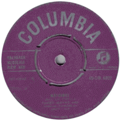

Terry Wayne - Matchbox / Your True Love (Single, 1957)
01 - Matchbox (1:50)
02 - Your True Love (1:54)
© Columbia :: [DB.4002]
Notes
Review
289/366 (Project 366)
Prominent songs by famous Carl Perkins are performed by underestimated UK artist Terry Wayne. With his potential, he was to be one of the best and most outstanding musicians of the era. However other artists came to the fore. Nevertheless, I always listen to his recordings with mostly great pleasure and high interest. Some compositions and covers are very close to original and authentic versions, some to specific UK look. But some things are exclusively Terry Wayne style and maybe way of other early rockers.
This "Matchbox" is very fine and pretty. Remind many UK rockin' and rollin' stars, remind favour of Rock'n'Roll music, fill with fifties mood. "Your True Love" is also very atmospheric. It starts with the sound of brass instrument (and featured a solo then), continues with a walking and cheerful mood. But the vocals, backing vocals and lyrics are especially memorable. In particular, a try to soft yodeling and general light rockin' feelings.
Danceable and peppy enough.